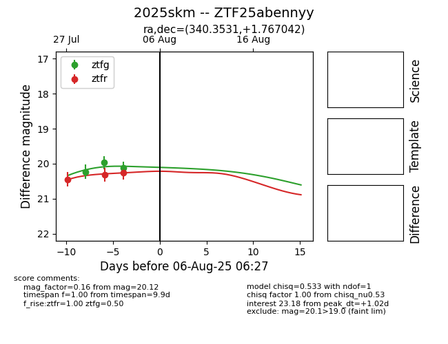

Target 2025skm at 2025-08-06 11:02, see:
FINK: fink-portal.org/2025skm
Lasair: lasair-ztf.lsst.ac.uk/objects/2025skm
ALeRCE: alerce.online/object/2025skm
TNS: wis-tns.org/object/2025skm
YSE: ziggy.ucolick.org/yse/transient_detail/2025skm
alt names
ZTF25abennyy (ztf,fink)
2025skm (tns,yse)
coordinates:
equatorial (ra, dec) = (340.3531,+1.76704)
galactic (l, b) = (70.4082,-47.40346)
photometry
last ztfg=20.12, ztfr=20.25
3 ztfg, 3 ztfr detections
